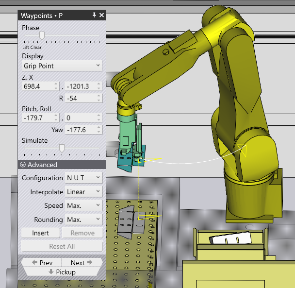
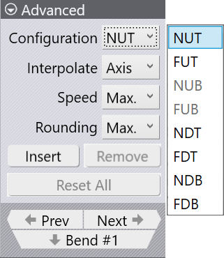
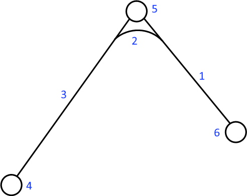
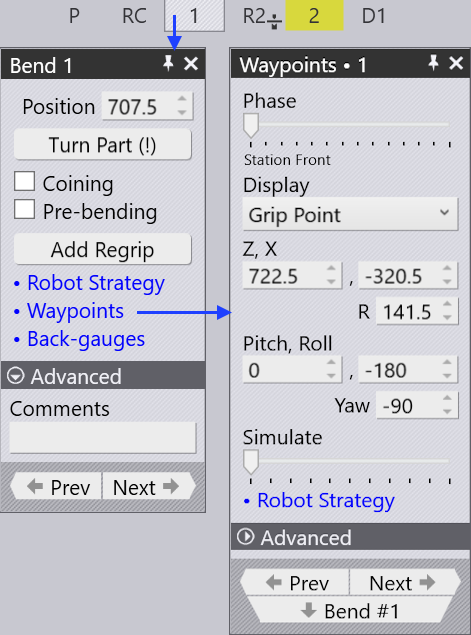
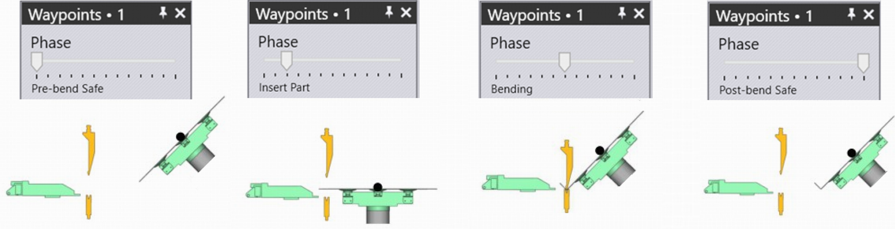
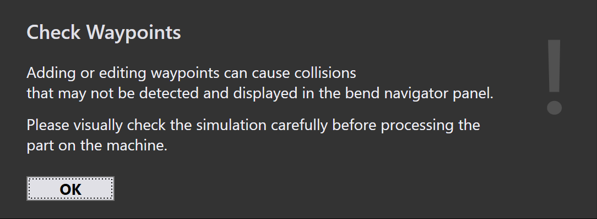
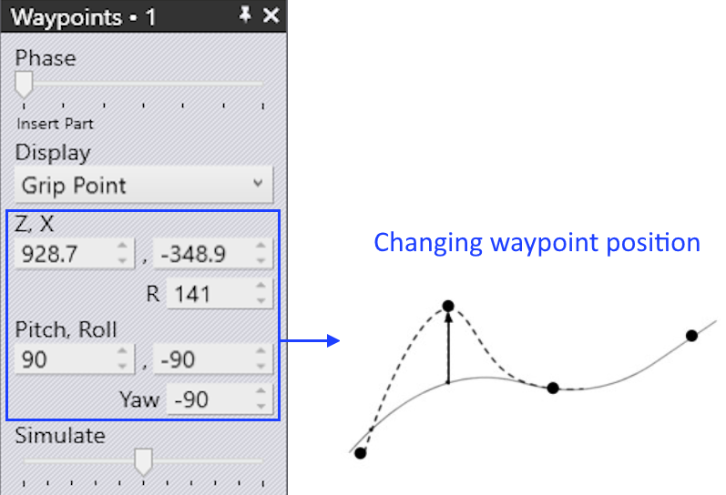
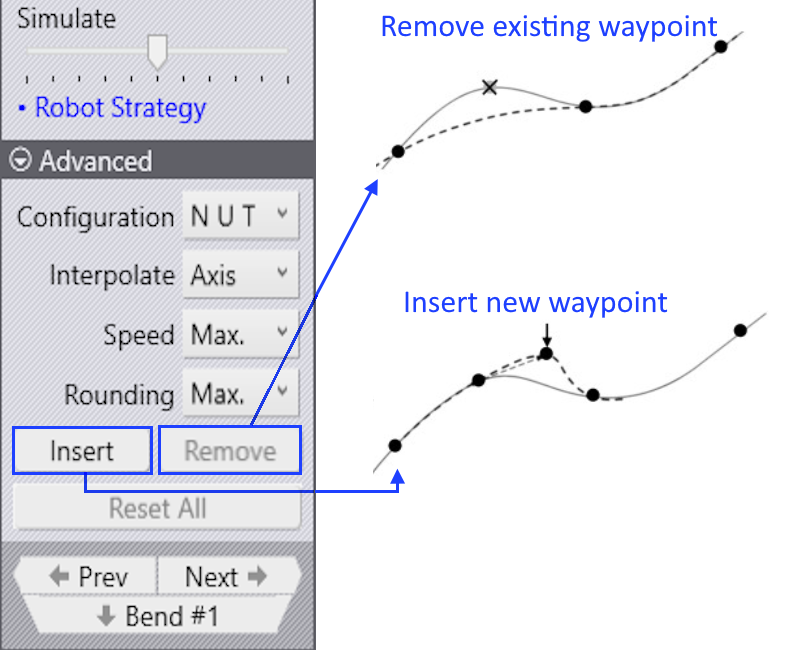
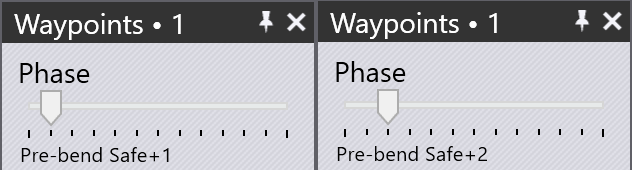
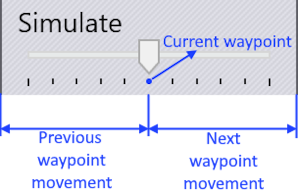

Wegpunkte
Jede Bewegung des Roboters besteht aus Wegpunkten, die nacheinander abgefahren werden. Alle Wegpunkte einer Bewegung werden von Flex Cell CAM festgelegt, die meisten lassen sich jedoch anpassen. Punkte, die direkt mit der Nachführung während des Biegevorgangs zusammenhängen, können nicht geändert werden. Im Folgenden sind verschiedene Einstellungen zum Steuern der Wegpunkte aufgeführt:
-
Die Position eines Wegpunkts ändern
-
Einen neuen Wegpunkt einfügen oder einen bestehenden Wegpunkt entfernen
-
Bewegungseigenschaften wie Geschwindigkeit und Interpolation anpassen
-
Einen neuen Wegpunkt an der gewünschten Position einfügen
So öffnen Sie das Panel Wegpunkte:
-
Drücken Sie nacheinander E und W, um das Panel Wegpunkte für die aktuelle Phase zu öffnen.
-
Klicken Sie im Aufnahme-, Biege-, Umgreif- oder Ablagepanel auf den Link Wegpunkte.
Wegpunkte Panel

Nebenstehend ist ein typisches Wegpunkte-Panel dargestellt:
-
Phase: Dieser Schieberegler zeigt die schrittweise Bewegung eines Wegpunkts. Jede Phase steht für einen bestimmten Robotervorgang, zum Beispiel Aufnehmen, Biegen, Umgreifen und Ablegen.
-
Anzeige: Mit dieser Option können Sie Folgendes anzeigen:
-
Greifpunkt: Die Position und der Winkel des Greifers (d. h. X, Y, Z, W, P und R des Werkzeugmittelpunkts (TCP)) werden angezeigt und können bearbeitet werden.
-
Handgelenkpunkt: Die Position und der Winkel des Handgelenks (d. h. X, Y, Z, W, P und R des End-of-Arm-Tools (EOAT)) werden angezeigt und können bearbeitet werden.
-
Roboterachsen: Die Werte der Robotergelenkachsen (J1 bis J6) werden angezeigt und können bearbeitet werden. Die gelbe Linie zeigt den Pfad vom vorherigen Schritt zu diesem und von diesem Schritt zum nächsten (siehe Abbildung oben). Die drei kleinen Dreiecke zeigen die lokalen X- und Y-Koordinaten des Roboters (Handgelenk oder Greifer) an.
-
-
Simulieren: Mit diesem Schieberegler bewegen Sie die Simulation von einer Phase zur nächsten. Befindet er sich in der Mitte, ist dies die aktuell bearbeitete Phase.
-
Konfiguration: In diesem Abschnitt wird die aktuelle Konfiguration des Roboters angezeigt. Sie beschreibt die Ausrichtung des Roboters.
-
Interpolieren: Mit dieser Einstellung können Sie zwischen linearer und achsenorientierter Interpolation wechseln.
-
Geschwindigkeit und Rundung: Mit diesen Einstellungen können Sie die Geschwindigkeit und die Genauigkeit für diesen Schritt anpassen.
-
Einfügen: Mit dieser Option können Sie durch Eingabe neuer Werte einen Wegpunkt hinzufügen.
-
Entfernen: Neu hinzugefügte Wegpunkte können Sie mit dieser Option entfernen.
-
Zurück und Weiter: Mit diesen Schaltflächen wechseln Sie zum vorherigen oder nächsten Schritt. Alternativ können Sie die Pfeiltasten „Links“ und „Rechts“ verwenden. Wenn Sie auf Weiter klicken, wird jeder Schritt einer Phase angezeigt. Am Ende der Phase wird das entsprechende Wegpunkte-Panel für die nächste Phase angezeigt.
Eigenschaften von Wegpunkten
Je nach Prozesszustand verfügt jeder Wegpunkt über Attribute zur Interpolationsart, Geschwindigkeit und Bewegungsgenauigkeit. Bei Bedarf können diese Attribute geändert werden.
Diese Einstellungen werden im Abschnitt „Erweitert“ des Wegpunkte-Panels vorgenommen.
Das Konfigurationspanel zeigt die aktuellen Positionen der Robotergelenke an.

| Interpolation type | Beschreibung |
|---|---|
Linear |
Lineare Bewegung des TCP entlang eines Pfads |
Axis |
Die Bewegung von der Ausgangsposition zur Endposition
erfolgt unabhängig vom Pfad so schnell wie möglich. |
| Geschwindigkeit type | Beschreibung |
|---|---|
Max. |
Höchstgeschwindigkeit |
Fast |
75 % der Höchstgeschwindigkeit |
Medium |
50 % der Höchstgeschwindigkeit |
Reduced |
30 % der Höchstgeschwindigkeit |
Slow |
20 % der Höchstgeschwindigkeit |
| Rundung type | Beschreibung |
|---|---|
Max. |
Die Rundung beginnt bei 50 % der kürzeren Weglänge |
Large |
Die Rundung beginnt bei 35 % der kürzeren Weglänge |
Medium |
Die Rundung beginnt bei 20 % der kürzeren Weglänge |
Reduced |
Die Rundung beginnt bei 10 % der kürzeren Weglänge |
Fine |
Die Rundung beginnt bei 5 % der kürzeren Weglänge |
Exact |
Der Kalibrierpunkt wird ohne Überblendung exakt angefahren |
| In Flex Cell CAM wird die Rundung nicht simuliert. Daher ist die Rundungssimulation immer „Genau“. Beim Anfahren des Werkstücks an der Maschine ist besondere Vorsicht geboten. |

-
Weglänge zwischen dem Wegpunkt und dem Endpunkt
-
Zurückgelegte Strecke
-
Weglänge zwischen dem Startpunkt und dem Wegpunkt
-
Wegpunkt 3 (Endpunkt)
-
Wegpunkt 2 (Rundungspunkt)
-
Wegpunkt 1 (Startpunkt)
Anzeige Wegpunkte
Sobald ein Biegeteil mit Werkzeugen eingerichtet ist, werden alle Wegpunkte für jede Bewegungsphase automatisch berechnet. Diese Punkte können Phase für Phase simuliert und mit einer passenden Beschreibung angezeigt werden.

Die folgenden Abbildungen zeigen die Wegpunktphasen des ersten Biegevorgangs in der Seitenansicht:

Wegpunkte bearbeiten
Die Position eines Wegpunkts kann bei Bedarf geändert werden, beispielsweise um eine Bewegung über eine Achse zu vermeiden.
Unter anderem zur Kollisionsvermeidung können unerwünschte Wegpunkte gelöscht oder neue Wegpunkte hinzugefügt werden.
-
Wenn Sie die Position eines bestehenden Wegpunkts ändern, zeigt TecZone eine Warnmeldung an. Klicken Sie auf OK, um die Änderung des Wegpunkts fortzusetzen.

-
Wenn Sie auf die Schaltfläche Einfügen klicken, werden neue Wegpunkte hinzugefügt.


-
Neu hinzugefügte Wegpunkte werden wie unten gezeigt im Phasennamen mit +1, +2 usw. gekennzeichnet:

Wegpunkte simulieren
Standardmäßig steht der Schieberegler Simulieren in der mittleren Position. Mit diesem Schieberegler wird die Bewegung des Roboters von einem Wegpunkt zum nächsten fließend simuliert.
